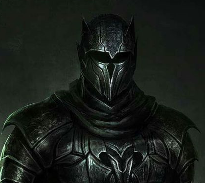

About Me
I started my long carreer as a minor poltergeist haunting the bed chamber of the ancient Hittite king Uriah. Even in my early days, I had a natural talent for moral corruption and the reaping of souls.
I gained the attention of several of the greater demons and rapidly worked my way up the chain of command. I have been known by several other names such as Lord Baal, Moloch and Bahamut. I currently hold the position of the lord of the shadow demons and I am responsible for the management of over 20,000 corrupted souls.
When I'm not busy consuming the spirits of the dammned, I enjoy hanging out with my cat Whiskers. I also enjoy watching unboxing videos on Youtube and listening to the Backstreet Boys.
Looking forward to the future, I'm hoping the experience I gain from the coding boot camp will lead to a position outside the realm of soul corruption and harvesting. I would like to move into web development and even someday find myself occupying the position of the Dark Harbinger of Web Services.